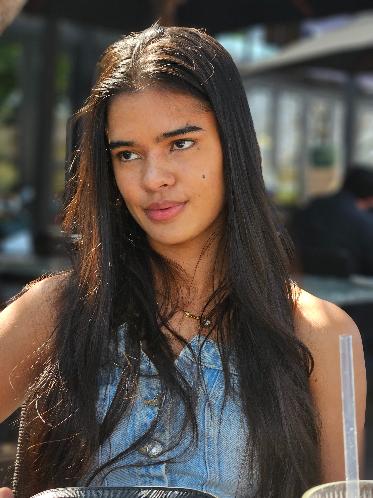

Hi, I am Alexia Wheatley
Based in Pretoria, South Africa
I am a Data Science graduate currently finishing my honors in data science, while building part-time experience in tech as well as working in the field hockey industry.

I am a Data Science graduate currently finishing my honors in data science, while building part-time experience in tech as well as working in the field hockey industry.
